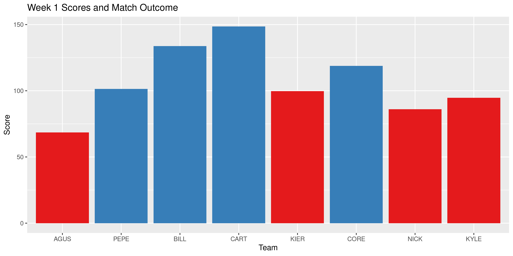

The fflr package is used to query the ESPN Fantasy Football API for both the current and prior seasons. Get data on fantasy league members, teams, and individual athletes.
Installation
You can install the released version of fflr from GitHub with:
# install.packages("remotes") remotes::install_github("kiernann/fflr")
Usage
The fflr package can be used to scrape team rosters, weekly matchups, draft pick history, and even calculate the optimal scoring roster.
library(fflr) rosters <- team_roster(252353, week = 1) rosters[[5]][, -5] #> # A tibble: 16 x 14 #> year week team slot first last pro pos status proj score start rost change #> <int> <int> <int> <fct> <chr> <chr> <chr> <fct> <chr> <dbl> <dbl> <dbl> <dbl> <dbl> #> 1 2020 1 6 QB Drew Brees NO QB A 17.5 14.4 0.569 0.940 -0.174 #> 2 2020 1 6 RB Alvin Kamara NO RB A 14.0 18.7 0.996 0.999 0.033 #> 3 2020 1 6 RB David Johnson HOU RB A 12.2 16.9 0.874 0.984 0.449 #> 4 2020 1 6 WR DeAndre Hopkins ARI WR A 9.73 15.1 0.992 0.999 0.03 #> 5 2020 1 6 WR Odell Beckham Jr. CLE WR A 9.09 2.2 0.843 0.994 0.013 #> 6 2020 1 6 TE Travis Kelce KC TE A 11.3 11 0.997 0.999 0.028 #> 7 2020 1 6 FX Jonathan Taylor IND RB A 9.25 8.9 0.499 0.955 0.19 #> 8 2020 1 6 DS Steelers D/ST PIT DS <NA> 7.03 8.5 0.957 0.995 0.065 #> 9 2020 1 6 KI Greg Zuerlein DAL KI A 7.53 4 0.866 0.926 -1.09 #> 10 2020 1 6 BE Cooper Kupp LAR WR A 8.79 4 0.825 0.982 0.267 #> 11 2020 1 6 BE D'Andre Swift DET RB A 5.58 8.3 0.128 0.889 -2.81 #> 12 2020 1 6 BE David Montgomery CHI RB A 8.55 7.4 0.185 0.908 -0.835 #> 13 2020 1 6 BE Christian Kirk ARI WR A 6.73 0 0.0729 0.781 -0.189 #> 14 2020 1 6 BE Ronald Jones II TB RB A 7.94 8.2 0.173 0.873 -1.18 #> 15 2020 1 6 BE Marvin Jones Jr. DET WR A 9.23 5.5 0.302 0.899 -0.218 #> 16 2020 1 6 BE Deebo Samuel SF WR I 0 0 0.0180 0.841 -3.38
best_roster(rosters[[5]][, -5]) #> # A tibble: 9 x 14 #> year week team slot first last pro pos status proj score start rost change #> <int> <int> <int> <fct> <chr> <chr> <chr> <fct> <chr> <dbl> <dbl> <dbl> <dbl> <dbl> #> 1 2020 1 6 QB Drew Brees NO QB A 17.5 14.4 0.569 0.940 -0.174 #> 2 2020 1 6 RB Alvin Kamara NO RB A 14.0 18.7 0.996 0.999 0.033 #> 3 2020 1 6 RB David Johnson HOU RB A 12.2 16.9 0.874 0.984 0.449 #> 4 2020 1 6 WR DeAndre Hopkins ARI WR A 9.73 15.1 0.992 0.999 0.03 #> 5 2020 1 6 WR Marvin Jones Jr. DET WR A 9.23 5.5 0.302 0.899 -0.218 #> 6 2020 1 6 TE Travis Kelce KC TE A 11.3 11 0.997 0.999 0.028 #> 7 2020 1 6 FX Jonathan Taylor IND RB A 9.25 8.9 0.499 0.955 0.19 #> 8 2020 1 6 DS Steelers D/ST PIT DS <NA> 7.03 8.5 0.957 0.995 0.065 #> 9 2020 1 6 KI Greg Zuerlein DAL KI A 7.53 4 0.866 0.926 -1.09
(teams <- league_teams(252353)) #> # A tibble: 8 x 5 #> team abbrev owners name year #> <int> <chr> <chr> <chr> <int> #> 1 1 AGUS {12E61406-349A-4DC7-A614-06349AADC797} Obi-Wan Mahomey 2020 #> 2 3 PEPE {5FA14794-6573-4189-A147-9465737189B2} JuJu's Bizarre Adventure 2020 #> 3 4 BILL {91F8B424-1689-472E-B8B4-241689172E35} Green Akers 2020 #> 4 5 CART {F33F0723-2CC3-4A1C-BF07-232CC34A1C15} Kenyan Younghoes 2020 #> 5 6 KIER {22DFE7FF-9DF2-4F3B-9FE7-FF9DF2AF3BD2} The Nuklear Option 2020 #> 6 8 CORE {9A722A48-6E16-42BC-9E0E-AC9E4E6D7ABC} Action Jackson 2020 #> 7 10 NICK {35D9B7DB-E821-453C-99B7-DBE821353C36} Kareemy Johnson 2020 #> 8 11 KYLE {C61F403A-F689-4269-879E-145B897F2308} Harry Ruggs 2020 scores <- weekly_matchups(252353)

The fflr project is released with a Contributor Code of Conduct. By contributing to this project, you agree to abide by its terms.